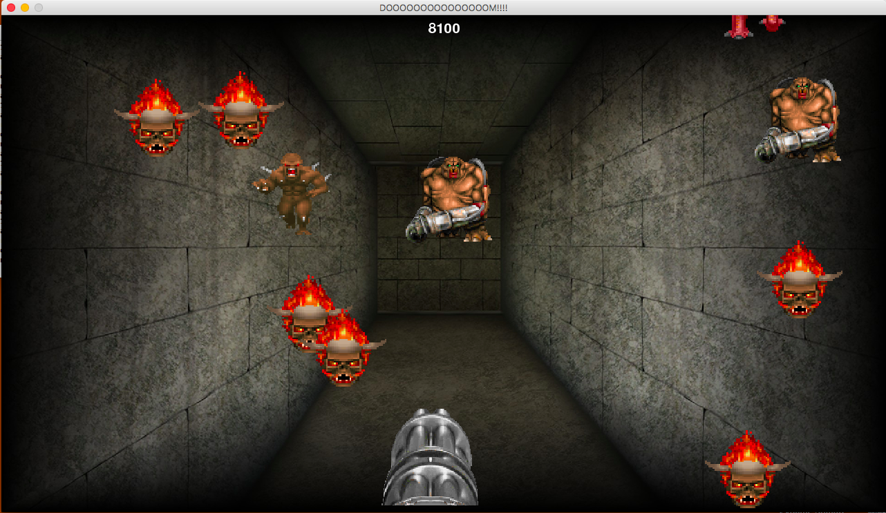
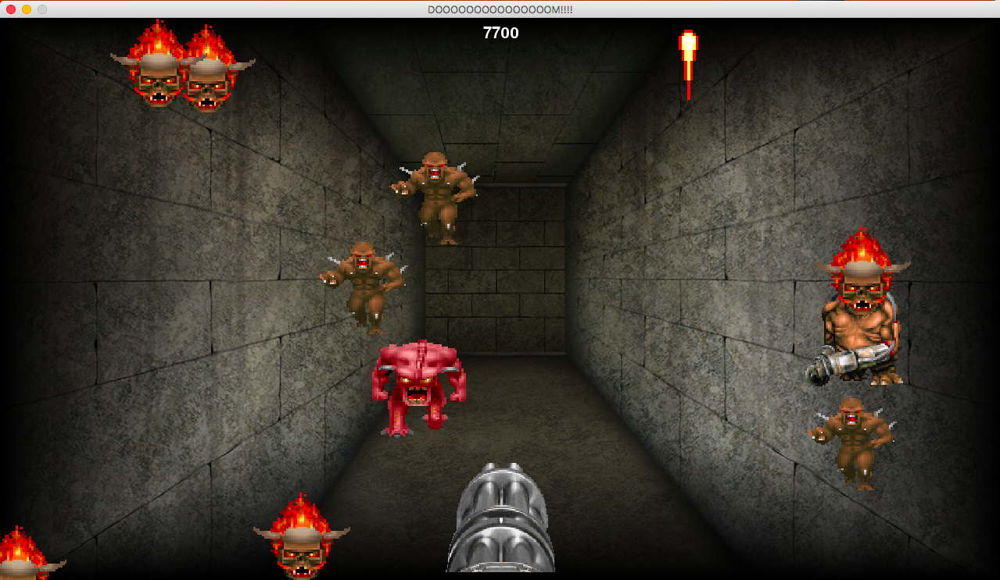
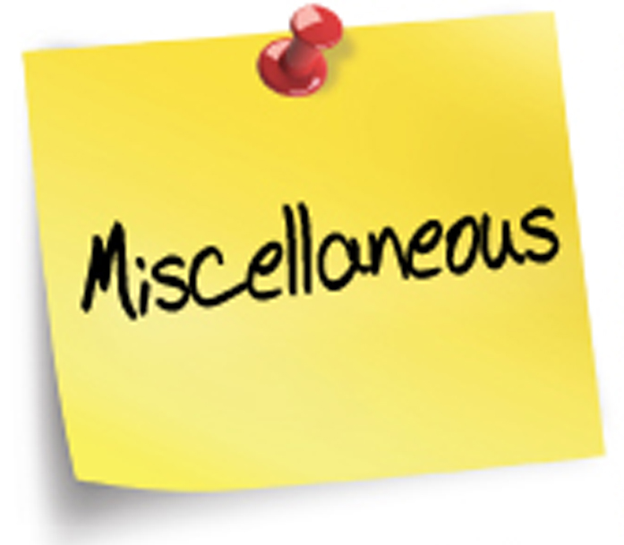

What are the possible benefits and challenges of digital technology such as mobile applications for newly-arrived immigrants?
Process:
I explore the different groups of immigrants that live in the United States and in the Ann Arbor area. Some immigrants do not speak English and just want to live a simple life. Others seek to learn English and are pursuing higher education in order to elevate their socioeconomic status and assimilate into American culture.
I assist in conducting interviews with both immigrants and volunteers who are tutors and staff working at organizations that help immigrants adapt to the unfamiliar setting. I also examine immigrant and volunteer behavior and experiences and analyze surveys and coding interviews.
Finally, I work to understand how digital tools such as social networking sites can suit those individuals' different needs. Many of those needs include expanding immigrants' social networks to gain local job and English learning opportunities, or ensuring proper communication between those immigrants and volunteers..
I am currently working on a solution with my research team. Stay tuned.
September 2016 - Present
Ann Arbor, MI
Here is the website:
Sociology UX Research
Sociology UX Research - Work in Progress
Problem:
How does spending time with internet-connected devices such as mobile phones and computers on a daily basis affect people’s daily motivations and mood?
Process:
I am currently planning to conduct ethnographic research, interviews, and surveys, with college students to understand the impact that digital devices have on their lives.
January 2017 - Present
PyGame
PyGame

Objective:
Design a first person Doom-inspired score attack game that is easily playable by anybody.

Objective:
Design a first person Doom-inspired score attack game that is easily playable by anybody.
Program and design a random lyrics and music generator that produces three-part song lyrics from Elvis Presley, Michael Jackson, and The Beatles,
and .wav instrumental files with random key signatures.
Completed Fall 2015

Miscellaneous
Miscellaneous: HTML/Python
Web Parsing (Beautiful Soup 4)
Objective:
Use Python to scrape news headlines from New York Times and email addresses from the school faculty directory.
Accessing Twitter REST APIs
Objective:
Use Python to produce tweets and calculate the polarity and subjectivity of tweets.
Natural Language Processing (Parts of Speech)
Objective:
Create a Mad Lib generator that produces a new version of any given text with randomly replaced parts of speech.